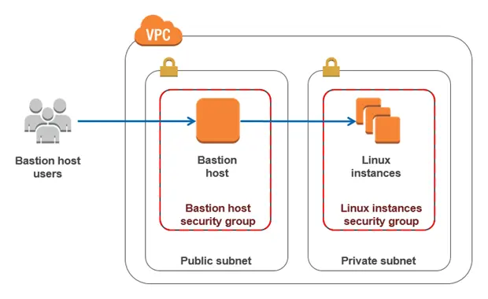

Connecting to EC2 instances
March 10, 2018
AWS provides one powerful feature called auto-scaling. If you configure it on your infrastructure, you will be able to automatically adjust capacity to maintain optimal performances at the lowest possible cost. But it will be more difficult to open an SSH connection on your EC2 instances as the associated IP addresses will change regularly.
There are two main advantages to using auto-scaling (source).
You can use Amazon EC2 Auto Scaling for fleet management of EC2 instances to help maintain the health and availability of your fleet and ensure that you are running your desired number of Amazon EC2 instances.
You can also use Amazon EC2 Auto Scaling for dynamic scaling of EC2 instances to automatically increase the number of Amazon EC2 instances during demand spikes to maintain performance and decrease capacity during lulls to reduce costs.
In addition to that, it’s a security best practice to protect your application servers by using a bastion architecture. In other terms, only one EC2 instance will be exposed in a public subnet when all other EC2 instances will be configured in a private subnet. And to access those servers, you’ll need to open an SSH connection through the bastion host.

Even if it’s the preferable approach with cloud infrastructure, it’s less user friendly when you need to reach one of your applications servers by SSH. Hopefully, it’s not something you do very often on “production ready” platforms since AWS provides enough services (CloudWatch especially) to let you monitor all your instances.
But when you are working on the building of a new infrastructure, it’s useful to be able to quickly SSH into a specific EC2 instance. By default, you need to retrieve IP addresses from the AWS console first and then, paste them in your terminal. That’s a massive waste of time when EC2 instances are renewed several times a day.
At some time, I decided to create a small script to improve that. The principle is pretty simple: instead of using IP addresses, I will use instead instances tags that we previously defined to facilitate the billing monitoring. If you want to use my script, you will need three things:
- a tag
Environmenton your EC2 instances, basically the name of the associated platform. - a tag
Nameon your EC2 instances, prefixed by theEnvironmentvalue. - a command-line JSON processor called
jqon the computer where the script is executed.
Long story short, everything is described below! The only thing you will probably need to change is the SSH account
since I let ec2-user in my snippet.
1#!/usr/bin/env bash
2set -euo pipefail
3
4# ==========================================================================================================
5# Make the SSH connection to EC2 instances easier by requiring only tag values instead of IP addresses.
6#
7# Usage:
8# bash aws-connect.sh <environment> <bastion|apache|nginx|...> <index>
9#
10# Examples:
11# SSH to the bastion: bash aws-connect.sh <environment> bastion
12# SSH to the first Apache instance: bash aws-connect.sh <environment> apache
13# SSH to the second Apache instance: bash aws-connect.sh <environment> apache 2
14# ==========================================================================================================
15
16# Validate arguments passed to the script
17if [[ ($# -eq 2 || $# -eq 3) && -n "$1" && -n "$2" ]]; then
18 environment="$1"
19 instance_type="$2"
20
21 if [[ $# -eq 3 && $3 =~ ^[0-9]+$ ]]; then
22 instance_index=$(( $3 - 1 ))
23 else
24 instance_index=0
25 fi
26else
27 echo "Usage: bash aws-connect.sh <environment> <bastion|apache|nginx|...> <index>"
28 exit 1
29fi
30
31# Retrieve the bastion public IP address
32bastion_ip=$(aws ec2 describe-instances \
33 --filters "Name=tag:Environment,Values=${environment}" \
34 "Name=tag:Name,Values=${environment}-bastion" \
35 "Name=instance-state-name,Values=running" \
36 | jq -r ".Reservations[0].Instances[0].PublicIpAddress"
37)
38
39# Retrieve the remote private IP address
40remote_ip=$(aws ec2 describe-instances \
41 --filters "Name=tag:Environment,Values=${environment}" \
42 "Name=tag:Name,Values=${environment}-${instance_type}" \
43 "Name=instance-state-name,Values=running" \
44 | jq -r ".Reservations[${instance_index}].Instances[0].PrivateIpAddress"
45)
46
47# Execute the SSH connection
48if [[ "${instance_type}" == "bastion" ]]; then
49 ssh ec2-user@"${bastion_ip}" -A
50else
51 ssh ec2-user@"${bastion_ip}" -A -t ssh ec2-user@"${remote_ip}"
52fi